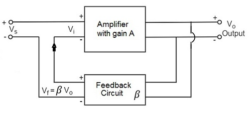

An amplifier circuit simply increases the signal strength. But while amplifying, it just increases the strength of its input signal whether it contains information or some noise along with information. This noise or some disturbance is introduced in the amplifiers because of their strong tendency to introduce hum due to sudden temperature changes or stray electric and magnetic fields. Therefore, every high gain amplifier tends to give noise along with signal in its output, which is very undesirable.
The noise level in the amplifier circuits can be considerably reduced by using negative feedback done by injecting a fraction of output in phase opposition to the input signal.
The feedback-amplifier can be defined as an amplifier which has feedback lane that exists between o/p to input. In this type of amplifier, feedback is the limitation which calculates the sum of feedback given in the following amplifier. The feedback factor is the ratio of the feedback signal and the input signal.

1. Positive Feedback Amplifier:
The positive feedback can be defined as when the feedback current otherwise voltage is applied for increasing the i/p voltage, then it is named as positive feedback. Direct feedback is another name of this positive feedback. Because positive feedback generates unnecessary distortion; it is not often used in amplifiers. But, it amplifies the original signal power and can be used in oscillator circuits.
2. Negative Feedback Amplifier:
The negative feedback can be defined as if the feedback current otherwise voltage can be applied for reducing the amplifier i/p, then it is called as negative feedback. Inverse feedback is another name of this negative feedback. This kind of feedback is regularly used in amplifier circuits.
An Oscillator is basically an Amplifier with “Positive Feedback”, or regenerative feedback (in-phase) and without any external input signal that generates an output waveform of a desired frequency.
An oscillator is basically a waveform generator which generates an output waveform, which oscillates with constant amplitude & constant desired frequency.
The frequency of oscillation at which sinusoidal oscillator operates is the frequency for which the total shift introduced, as the signal proceeds from the input terminals, through the amplifier and feedback network, and back again to the input, is precisely zero (or an integral multiple of 2*Π).
Stated simply the condition A*β = -1 at ω= ωo, i.e. the magnitude of loop gain should be one and phase of loop gain should be unity (the feedback network introduces 1800 phase shift, the other 1800 phase shift is provided by Amplifier) is called Barkhausen criterion.

A closed loop system with negative feedback can be represented by a transfer function = A/(1+A*β). Often feedback network consists of only resistive elements and is independent of frequency but amplifier gain is a function of frequency. Hence the loop gain A*β is a function of frequency. There may exist a frequency ωo at which its magnitude is one and phase is 1800 i.e. A*β = -1 (Barkhausen criterion).
In the Hartley Oscillator the tuned LC circuit is connected between the collector and the base of a transistor amplifier. As far as the oscillatory voltage is concerned, the emitter is connected to a tapping point on the tuned circuit coil.
The feedback part of the tuned LC tank circuit is taken from the centre tap of the inductor coil or even two separate coils in series which are in parallel with a variable capacitor, C as shown.
An Hartley Oscillator circuit can be made from any configuration that uses either a single tapped coil (similar to an autotransformer) or a pair of series connected coils in parallel with a single capacitor as shown below.
When the circuit is oscillating, the voltage at point X (collector), relative to point Y(emitter), is 1800 out-of-phase with the voltage at point Z (base) relative to point Y. At the frequency of oscillation, the impedance of the Collector load is resistive and an increase in Base voltage causes a decrease in the Collector voltage.
Then there is a 1800 phase change in the voltage between the Base and Collector and this along with the original 1800 phase shift in the feedback loop provides the correct phase relationship of positive feedback for oscillations to be maintained.
The amount of feedback depends upon the position of the “tapping point” of the inductor. If this is moved nearer to the collector the amount of feedback is increased, but the output taken between the Collector and earth is reduced and vice versa. Resistors, R1 and R2 provide the usual stabilizing DC bias for the transistor in the normal manner while the capacitors act as DC-blocking capacitors.
In this Hartley Oscillator circuit, the DC Collector current flows through part of the coil and for this reason the circuit is said to be “Series-fed” with the frequency of oscillation of the Hartley Oscillator being given as.
Note:
LT is the total cumulatively coupled inductance if two separate coils are used including their mutual inductance, M.
The frequency of oscillations can be adjusted by varying the “tuning” capacitor, C or by varying the position of the iron-dust core inside the coil (inductive tuning) giving an output over a wide range of frequencies making it very easy to tune. Also the Hartley Oscillator produces an output amplitude which is constant over the entire frequency range.